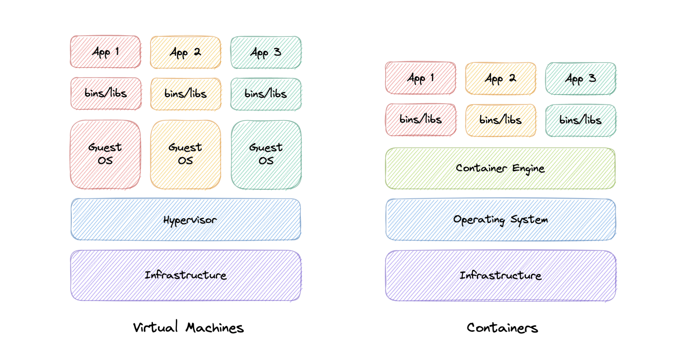
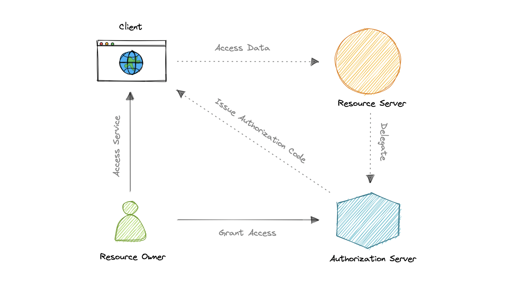
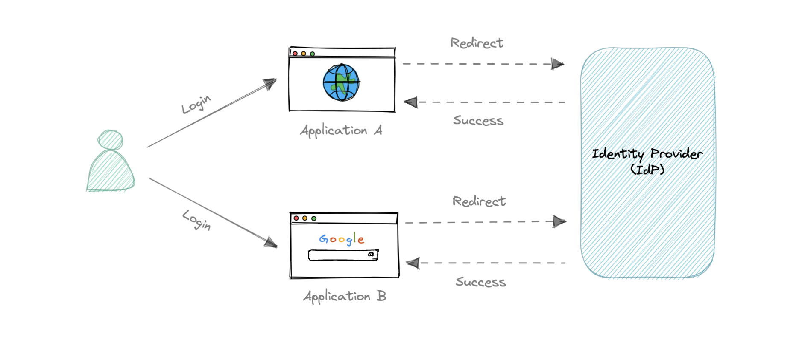

Bảo mật & Hạ tầng
Ảo hóa (VMs vs Containers) và các giao thức xác thực/bảo mật then chốt: OAuth 2.0, OpenID Connect, SSO/SAML, và SSL/TLS/mTLS.
Virtual Machines vs Containers
VM: môi trường ảo có CPU/RAM/network/storage riêng, tạo trên phần cứng vật lý nhờ hypervisor. Mỗi VM có guest OS riêng. Container: đóng gói code + mọi dependency để app chạy nhất quán mọi nơi; chia sẻ kernel của host OS.
| Virtual Machines | Containers | |
|---|---|---|
| Ảo hóa cái gì | Phần cứng (qua hypervisor) | Hệ điều hành |
| Chứa gì | Guest OS + phần cứng ảo + app + libs | Chỉ app + dependency |
| OS | Mỗi VM có OS riêng | Dùng chung kernel host |
| Trọng lượng | Nặng | Rất nhẹ |
| Bộ nhớ | Tốn nhiều | Dùng một phần nhỏ so với VM |

VM ảo hóa phần cứng (cách ly mạnh, nặng). Container ảo hóa OS (nhẹ, khởi động nhanh, portable). Container là nền tảng của microservices hiện đại (Docker + Kubernetes — xem Bài 3 Clustering).
OAuth 2.0
OAuth = Open Authorization — chuẩn cho phép truy cập tài nguyên thay mặt người dùng mà KHÔNG chia sẻ mật khẩu. Đây là giao thức authorization (ủy quyền), không phải authentication.
Các vai trò: Resource Owner (chủ tài nguyên = user), Client (bên cần truy cập), Authorization Server (cấp Access Token), Resource Server (giữ & bảo vệ tài nguyên), Scopes (phạm vi quyền), Access Token (đại diện cho ủy quyền).

OpenID Connect (OIDC)
OAuth 2.0 chỉ lo authorization. OIDC là lớp mỏng trên OAuth 2.0, bổ sung đăng nhập (authentication) & thông tin hồ sơ người dùng. Khi Authorization Server hỗ trợ OIDC, nó được gọi là Identity Provider (IdP). Điểm khác biệt: token được cấp dưới dạng JWT (JSON Web Token).
Single Sign-On (SSO)
Cho phép dùng một bộ thông tin đăng nhập để truy cập nhiều ứng dụng. Thông tin do một Identity Provider (IdP) trung tâm quản lý.
Thành phần: IdP (xác thực & cấp quyền), Service Provider (cung cấp dịch vụ, tin tưởng IdP), Identity Broker (trung gian nối nhiều SP với nhiều IdP). SAML (Security Assertion Markup Language, dạng XML) cho phép identity federation.
| SAML | OAuth 2.0 / OIDC | |
|---|---|---|
| Định dạng | XML | JSON |
| Phù hợp | Bảo mật cấp doanh nghiệp | Mobile & web hiện đại (RESTful) |
| Triển khai | Phức tạp, hợp công ty lớn | Developer-friendly, nhanh |

Ưu: dễ dùng (nhớ 1 mật khẩu), dễ truy cập, dễ quản lý, tăng bảo mật/tuân thủ. Nhược: nếu lộ mật khẩu SSO → mọi ứng dụng bị ảnh hưởng; chậm hơn vì mỗi app phải hỏi IdP. Ví dụ IdP: Okta, Google, Auth0, OneLogin.
SSL, TLS, mTLS
- SSL (Secure Sockets Layer, 1995): giao thức mã hóa truyền thông internet — đã deprecated, thay bằng TLS (nhưng "SSL certificate" vẫn được gọi quen).
- TLS (Transport Layer Security): tiến hóa từ SSL; đạt 3 mục tiêu — Encryption (mã hóa), Authentication (xác thực các bên), Integrity (toàn vẹn, chống giả mạo).
- mTLS (mutual TLS): xác thực cả hai chiều — cả client & server đều chứng minh danh tính qua private key/certificate. Hay dùng trong microservices theo mô hình zero trust, và với thiết bị IoT (không có quy trình login).
VM ảo hóa phần cứng (nặng, cách ly mạnh), Container ảo hóa OS (nhẹ, portable). OAuth 2.0 = ủy quyền (không chia sẻ mật khẩu); OIDC thêm đăng nhập (JWT). SSO = 1 đăng nhập cho nhiều app qua IdP (SAML/OIDC). SSL→TLS mã hóa truyền thông; mTLS xác thực hai chiều (zero trust).